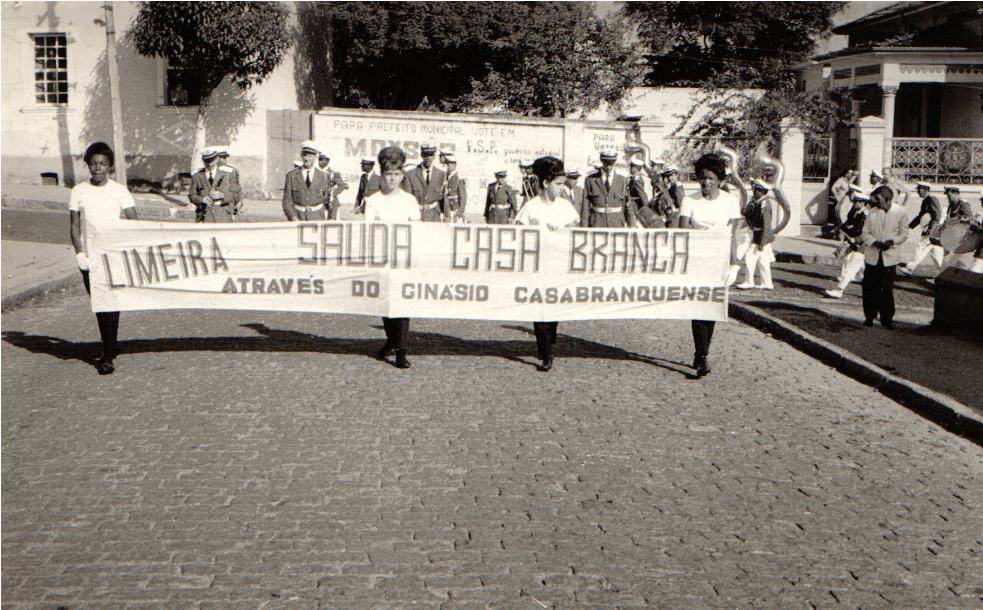
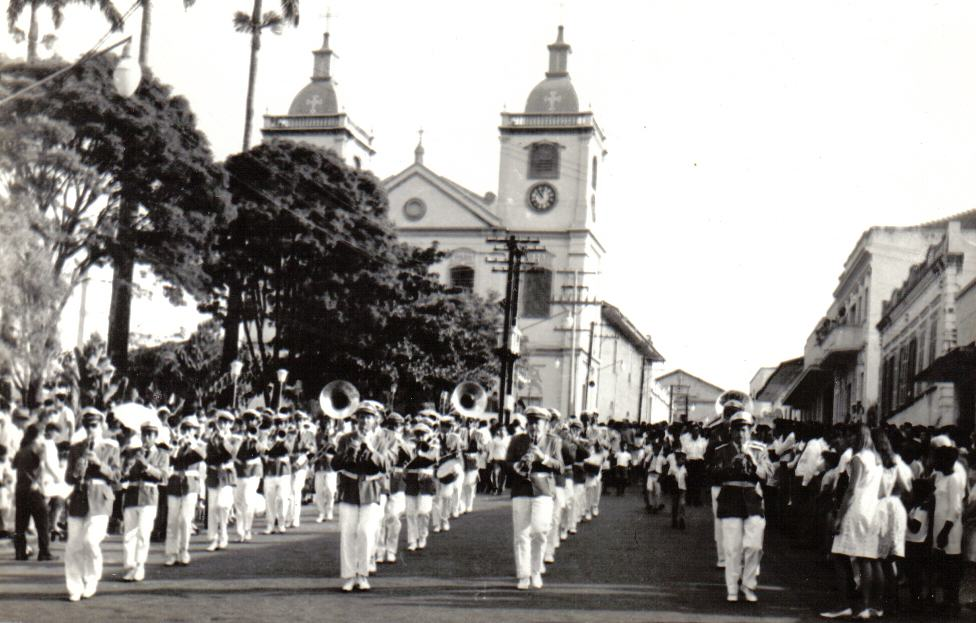
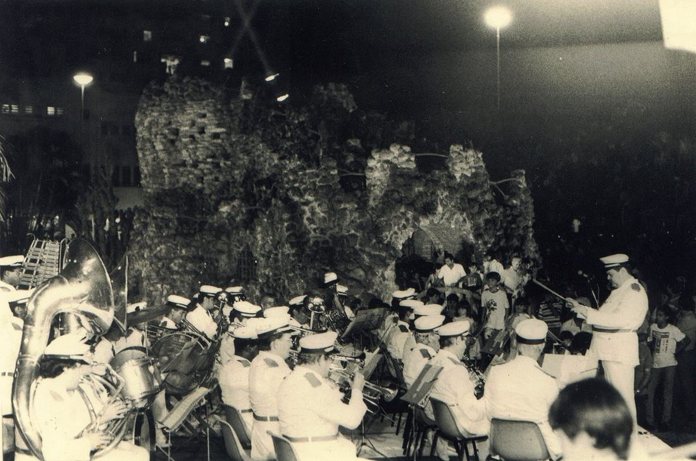
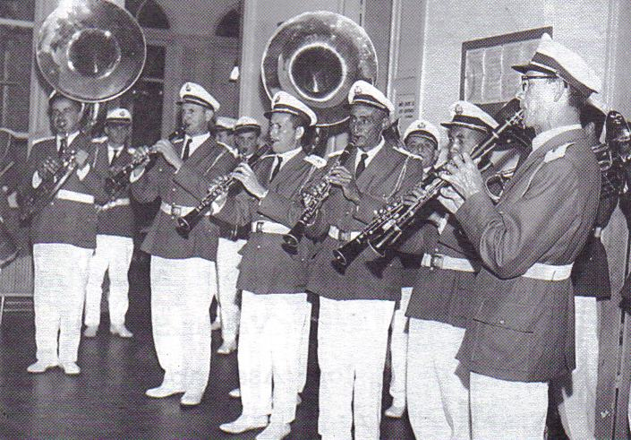
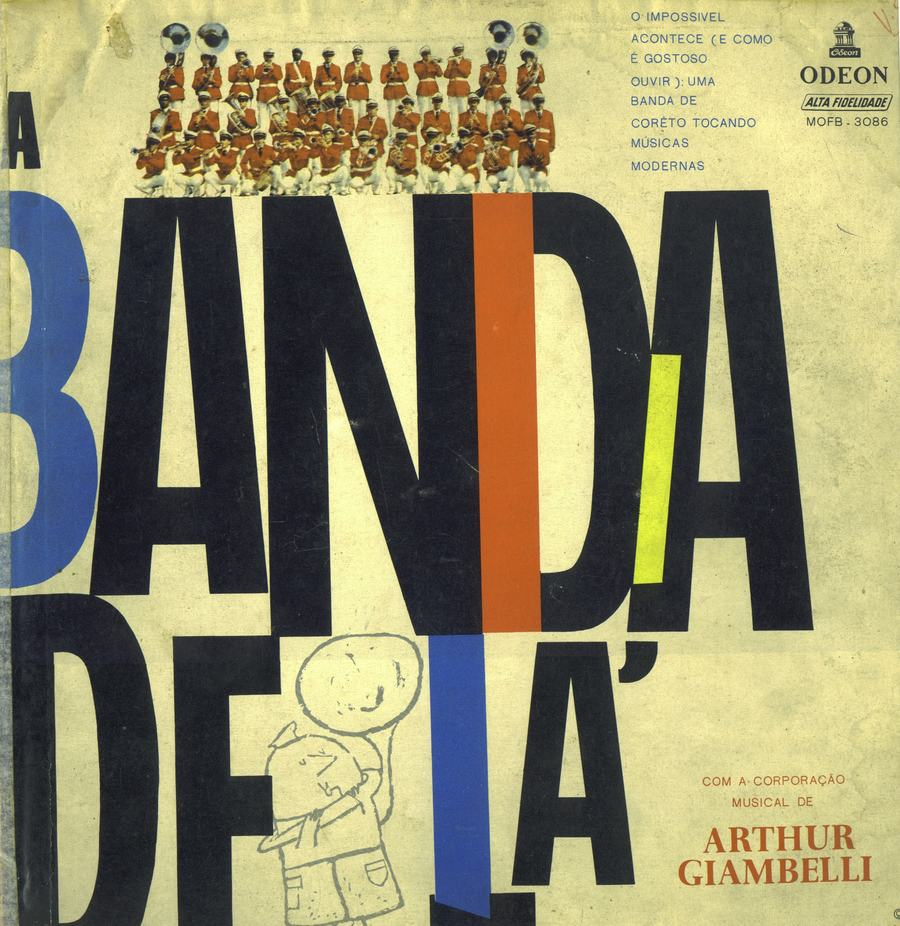
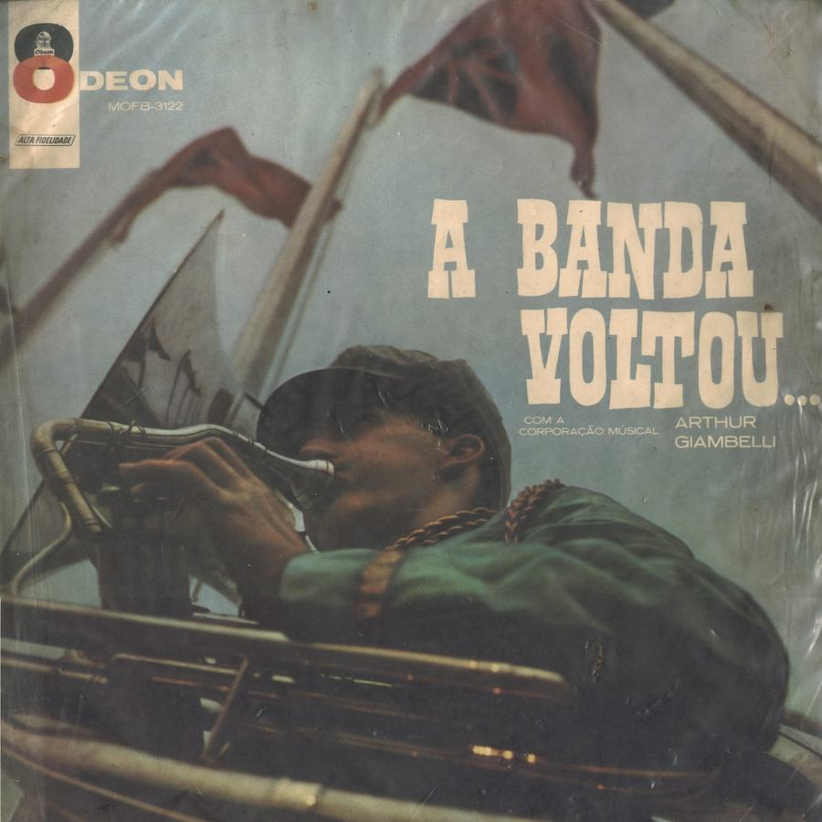
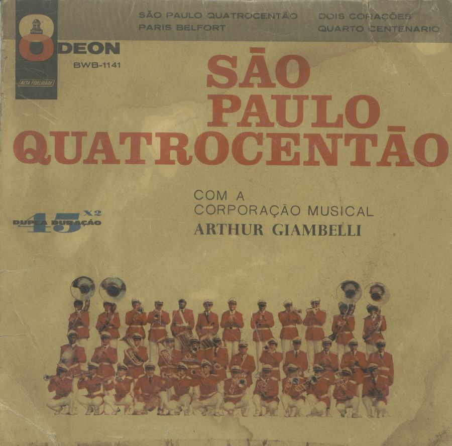
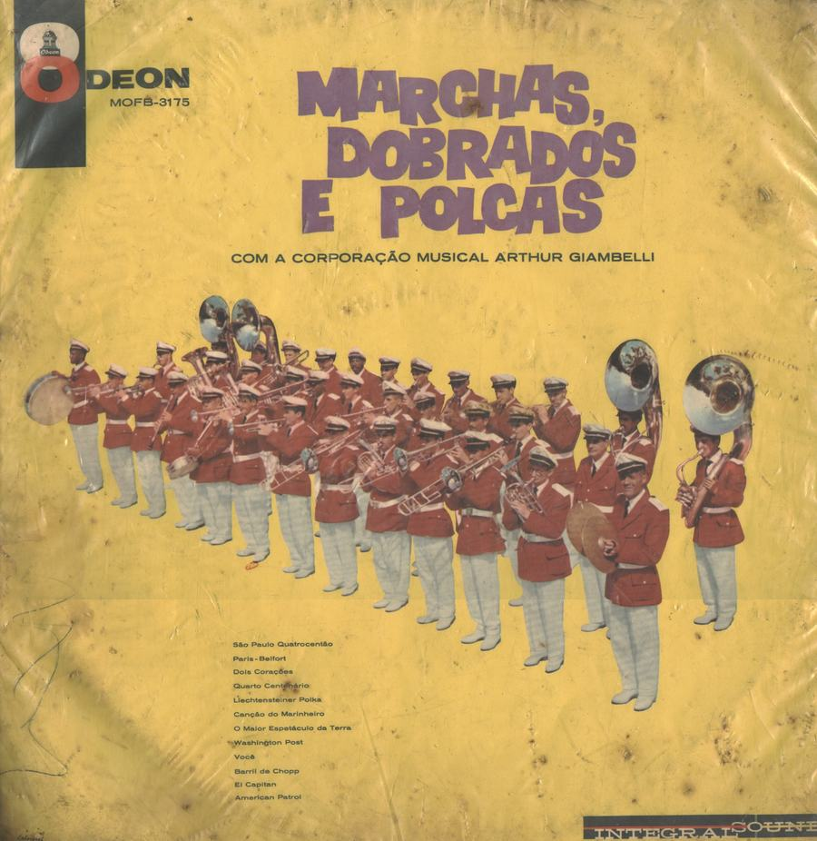
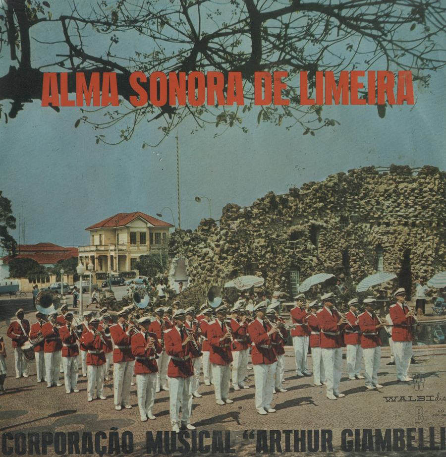

Nossa história
Mais de nove décadas de música, formação de músicos e orgulho de Limeira.
Do sonho de um sapateiro
A Corporação Musical Arthur Giambelli foi construída por centenas de músicos, geração após geração. Desde os primeiros anos, esteve ligada à comunidade: manteve escolas de música com aulas gratuitas de solfejo e instrumento e esteve presente em praças, festas, desfiles e eventos cívicos.
A música é a arte do conjunto, e ninguém brilha sozinho.
Linha do tempo
- 1932Em 6 de junho, nasce a Corporação Musical Frente Única, da união de músicos da cidade que queriam uma banda da cidade e para a cidade. Entre os fundadores está Arthur Giambelli, sapateiro de profissão e músico por vocação.
- 1947Após a morte de Arthur Giambelli, aos 63 anos, a corporação adota oficialmente o nome dele, em homenagem a quem dedicou a vida à música e à formação da banda.
- 1954Com apenas 27 músicos, a banda viaja de trem para São Paulo e conquista o título de campeã do 4º Centenário da cidade.
- 1958 e 1959Premiada no Concurso de Bandas Civis do Estado, da Rádio Record, recebe o título de “Melhor Banda do Interior”.
- 1959Torna-se a primeira banda de música a gravar um LP pela Odeon: A Banda de Lá. Vêm depois A Banda Voltou, São Paulo Quatrocentão e Marchas, Dobrados e Polcas.
- 1961Pela Walbdisc, lança Alma Sonora de Limeira, seu sexto e último LP.
- 1980Participa de atos do movimento Diretas Já e recebe do Governo do Estado de São Paulo o título de “A Banda das Diretas”.
- 1990Conquista a atual sede, na Rua Boa Morte.
- 1992Aos 60 anos de história, passa a incorporar mulheres ao quadro de músicos.
- 2001Leandro Rodrigo Pereira assume a regência. Guitarra, baixo elétrico, piano e teclado se juntam aos sopros, e os concertos temáticos no Teatro Vitória entram no calendário cultural de Limeira.
- HojeNo canal do YouTube, centenas de apresentações e registros históricos chegam a públicos de vários lugares. Em 2026, o documentário Alma Sonora de Limeira revisita essa trajetória.
Acervo





Fotos do acervo da Corporação.
Discos
Em 1959, a banda gravou o primeiro LP de uma banda de música pela Odeon. Esta é a discografia em vinil.




